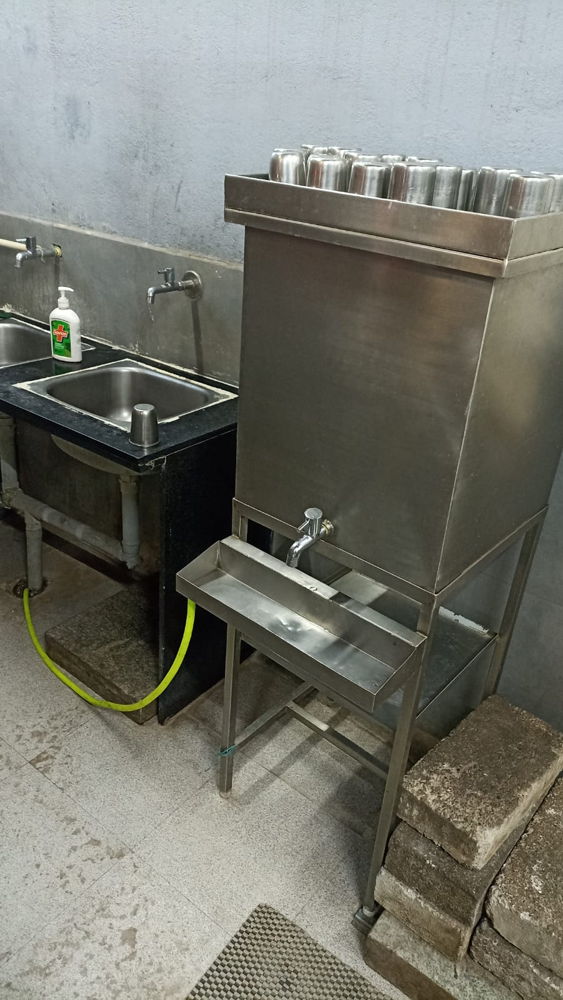
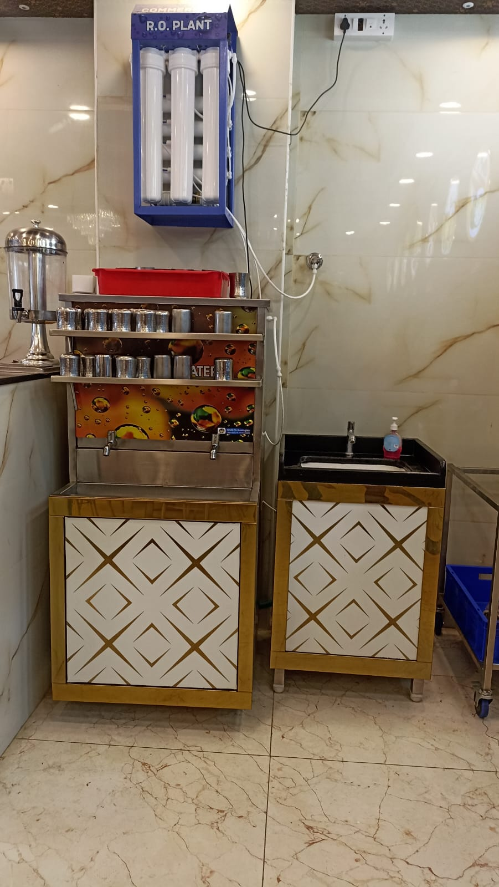
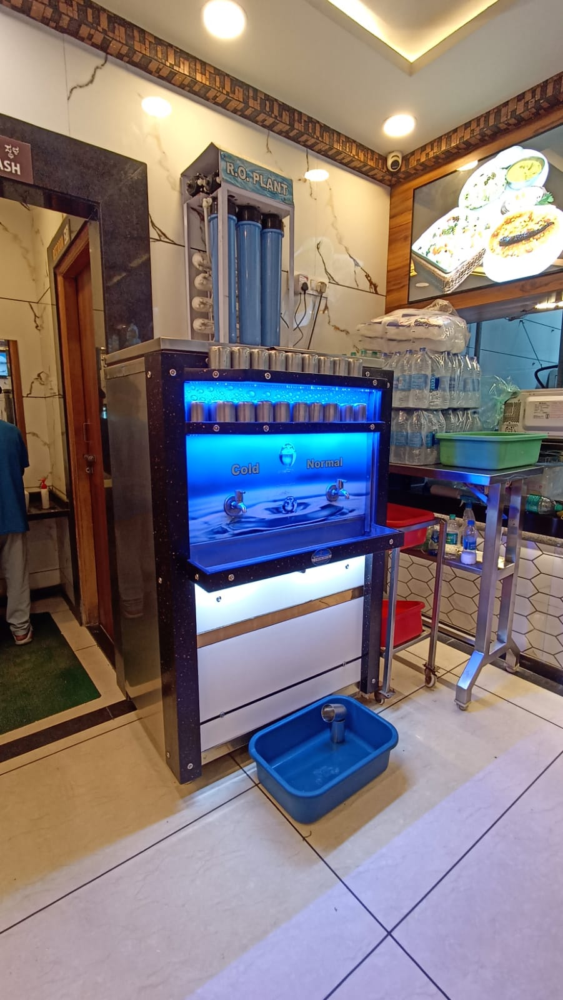
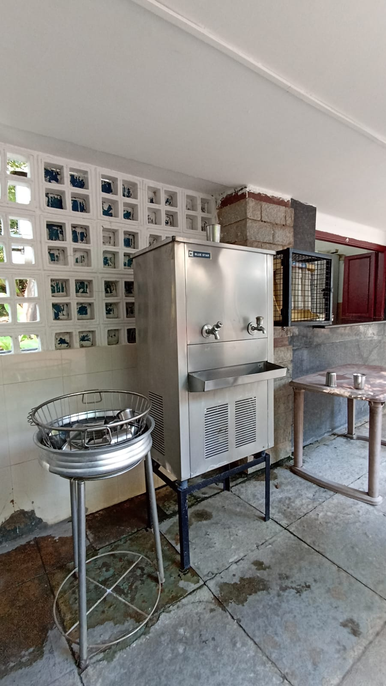

A REENVO INVESTIGATION
Something better
is coming.
We keep pushing water away.
And we are right to.
Scroll to understand why
We keep pushing water away.
And we are right to.
Every day, millions of people skip drinking water at restaurants
just because the steel glass in front of them does not feel safe.
And instead of questioning the system, we choose to just let it be.
Go home and drink. Get our own water bottle. Or reach for the paper cup.
"I have almost always skipped drinking water from those glasses. And I'm sure I'm not the only one."
A voice from our community. Millions more just like it.
Walk into any quick service restaurant in India. Order your meal. And then, there it is. A steel glass with a suspicious film. Or a flimsy plastic cup headed straight for a landfill. Neither option feels good. Neither one is good enough.
No visibility into how it was cleaned. Or if it was. You can see the stains. You can smell the doubt.

India generates over 3.5 million tonnes of plastic waste annually. Throwaway cups are a quiet, daily contributor.
The water got purer. The vessel stayed broken.

Manual cup management cycles every single day in a high-traffic QSR. Collect. Wash. Dry. Stack. Repeat.
of potential kitchen efficiency drained by cup management alone
Stacked wet cups trap moisture. Bacteria colonies form in less than 6 hours. Invisibly.
of manual washing operations fail FDA temperature standards

Cold water. No sanitizer. No temperature monitoring. This is how millions of steel cups are "cleaned" daily.



Across India's restaurants and food courts, the same unsolved system, repeated everywhere.
India's quick service restaurant industry serves over 7.5 billion meals a year. Water is offered at nearly all of them. And yet the infrastructure around that single act — handing someone a clean glass — has barely changed in decades.
Contaminated surfaces and shared utensils in food service are a well-documented transmission vector. The problem is not invisible. It has just been accepted as normal.
We do not want to accept that.
You shouldn't have to ask.
No spam. No newsletters. Just the moment it's ready.
Or share your own story with us at hello@reenvo.in
We'd love to know your part of the story around one mighty drinking water glass.